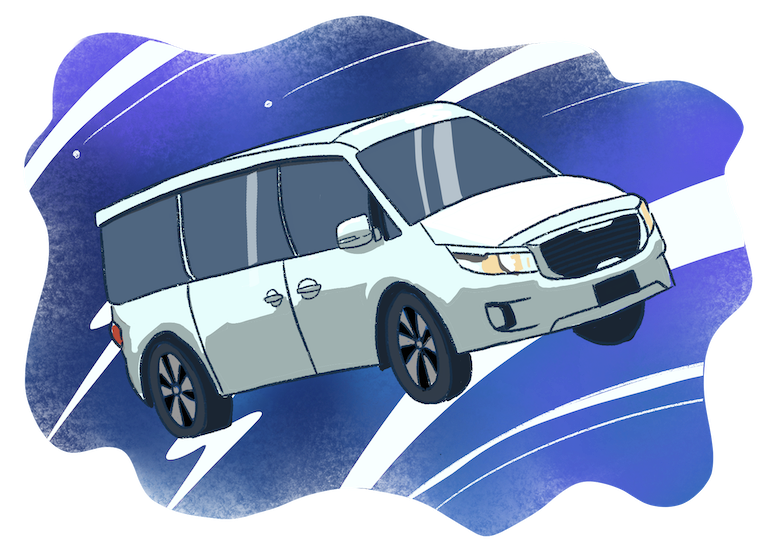

At the Universal Studios theme park in Hollywood, there used to be a Back to the Future ride opened in 1993, but it was shut down in 2007 due to the lack of attractiveness to the tourists. However, there was a corner dedicated to the famous movie trilogy at the souvenir store inside the theme park. They had a lot of merchandise, ranging from clothing, posters, keychains, toys. One specific toy car caught the eye of a little boy. The toy car was a 1985 DMC De Lorean, the time machine in the movie:. Whenever the car speeded up to 88 miles per hour, it would be able to time travel. The boy loved the movie and immediately fell in love with the vehicle. He had decided to purchase the toy car with his own money. Right after he stepped out of the store, he had already been unboxing the new toy. He threw the packaging in a nearby trashcan and held the toy in his hand while walking.
It was getting darker, and the temperature started to drop during the Christmas season, and the theme park was still packed with people at nighttime. The boy’s family and friends decided it was time to leave the theme park and eat at the restaurant outside the park before driving home. As they were waiting in line for their turn to eat at the Japanese restaurant, the boy played with the De Lorean toy car. He switched the car to ‘Fly mode’, and the De Lorean tires began to turn sideways, exactly like in the movie. The boy began holding the car and flying it in the air while the adults talked about what food to order and who would be the driver to drive everyone home. The adult’s conversation was boring, and the boy couldn’t care less. Everything sounded meaningless to him.
As De Lorean zoomed in the air, the boy started to notice something. The lights inside the cars began flashing, the Flux capacitor, the fuel for time travel inside the car, was flashing too. “Look! Look! The lights inside are flashing!”, he shouted to his parents, pointing to the car. The adults were busy looking at the menu and discussing what to order with the server. The boy tried to catch the attention of the adults by swinging the car with the flashing lights in the faces of the adults, but no one bothered to even respond or look at the boy. The boy eventually gave up and just sat down and looked at the car, “The inside of the car is flashing, but no one cares.” he thought to himself. After a full day of playing at the theme park, he felt exhausted and hungry. His visions were starting to blur. His eyelids were getting heavier and heavier while he was eating dinner. He didn’t even know what he was putting in his mouth, but he kept eating because he was hungry. He finally felt there was no longer the need to eat, and he just sat down, his head was starting to get heavy, and he rested his head on the dining table. All the conversations the adults began to fade, and he was just enjoying the rest. He fell asleep.
The boy felt something moving. He was moving. He thought he was moving step by step. He slightly opened his eyes to see what was going on. He noticed that he was being carried by his mother, his mother was walking, he felt the warmth of his mother’s body and felt safe. He slowly closed his eyes and allowed himself to rest his head on his mother’s shoulder while she was walking.
He felt the walking steps have stopped. He heard the sound of the car being unlocked by the remote control. His mother started to place him into the child seat inside the car. He was unhappy that the warmth was gone and that he was being placed in a cold seat. He frowned. He then felt he was being strapped to the seat. He was upset and made sounds of distress. The boy was too tired to talk and just sat on the child seat with the seatbelts his mother helped him buckled. He heard sounds of the engines turned on, the car was starting to speed up, and he felt warm from the car heater. The boy dozed off when the mother started driving on the 101 freeway back home.
It was late midnight, there were very few cars on the freeway compared to the usual heavy traffic in Los Angeles. The mother was speeding up, and she turned up the volume of the music. Her son was fast asleep at the back in his child seat. There were only two of them in the car. Only the music playing in the car and the car engine sounds can be heard.
“Still one more hour to arrive home,” the mother thought to herself. She was exhausted and decided to speed up. Worrying about getting a speeding ticket, she decided to turn on the radar detector. The detector she had recently bought from Amazon claimed to be able to detect any police speed trap. After turning it on, she started to ignore the freeway's speed limit and drive fast at her own pace.
The boy was fast asleep in the backseat holding the De Lorean toy car in his hands. He was totally unaware that the inside of the car was starting to flash again. As his mother drove faster and was speeding up to 80 miles per hour, the lights inside the De Lorean toy car flashed more quickly. The boy suddenly woke up. He felt the heat in his hands, the toy car was heating up, and the lights kept flashing. He was shocked and almost jumped up, but he was in his seat belts. “Mom! Look! My CAR!! The lights are flashing, and it’s burning!”, the boy shouted. His mother looked through the rearview mirror and told the boy to put the car aside. She was worried about the malfunctioning that may cause a fire in the car she is driving. She was concerned and thought she needed to reach home faster, so she stepped on the accelerator harder. The dashboard in the car shows 85 miles per hour, 87 miles per hour, and when it hit 88 miles per hour. The whole car was shaking, and a loud roar could be heard, electricity was hitting the car, and everything went bright white.
When the white light slowly started to lessen, they realised the car was floating, the car was flying in the sky! The mother and son were both wide awake now. The boy unbuckled his seatbelts and climbed to the front seat, and sat beside his mother. They were both in silence from the shock, then the silence broke when the boy spoke, “Mom, I think we time travelled... I’ve been trying to tell you, the flux capacitor in the De Lorean was flashing.” They both looked down outside the windows from the car. The car was slowly flying in the sky. From a distance, they saw the Venetian hotel, the MGM hotel, the Wynn Palace hotel, and some other significant buildings with lights. “No, I think we just flew from L.A. to Vegas” the mother replied.
As they both gazed out the window, amazed and in disbelief. The boy shouted, “MOM! I see the Parisian and the airport!” The mother was busy looking in another direction and replied to his son they were the Paris hotel and Las Vegas airport. But soon, the mother noticed something strange. She could not see the pyramid-shaped hotel Luxor and the Statue of Liberty of New York hotel. The car kept floating in the sky but slowly started moving forward. The mother started stepping on the accelerator, and the car flew faster.
The mother had no idea what she was doing, but somehow the car was flying in the direction of the steering wheel. “How do I land this thing?” the mother said to herself. At that moment, they both noticed a landmark lit up in the dark, and the mother said, “That’s the Ruins of Saint Paul, dude, we’re in Macao, what the heck?”
There was a sudden brake, the boy felt all motions stopped, and everything grew quiet. There was no engine sound, no music from the radio, just silence. Everything went dark. The boy was screaming, but no sound came out. When he can see again, and opens his eyes. He was back in his seatbelts in the child seat at the backseat of the car. His mom opened the car door beside him from the outside. “Babe, we’re home. Can you walk, or you want me to carry you upstairs?” But the mother had already held him in her arms, he was tired, but he reached out his arm to take the De Lorean car which had fallen on the seats, it was burning hot, and he threw it down and just laid comfortably on his mother’s arms.